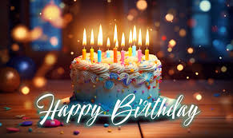
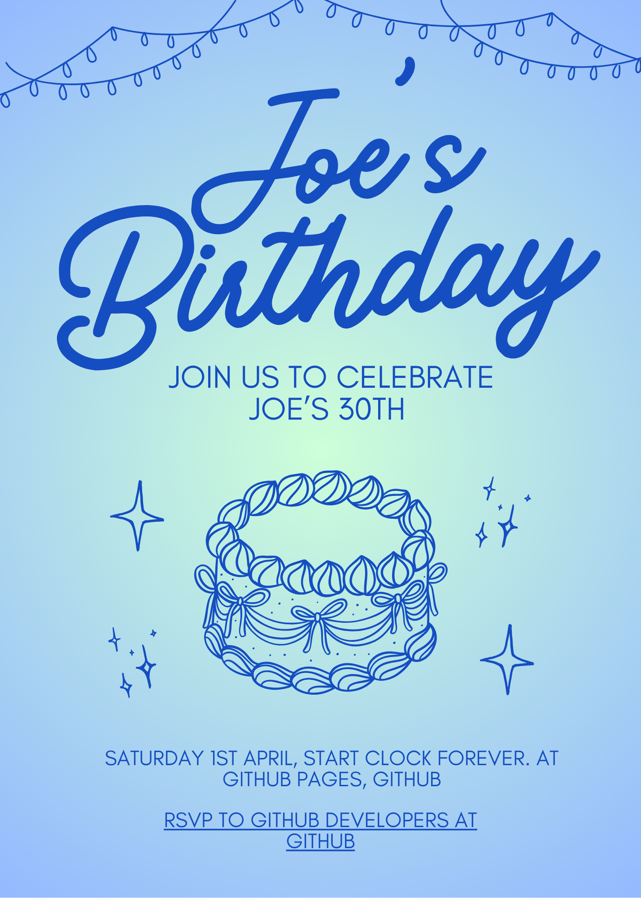
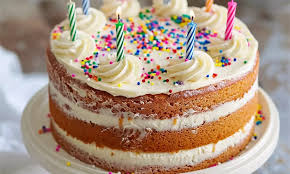
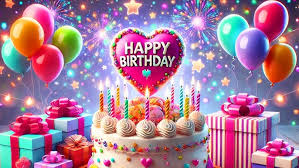
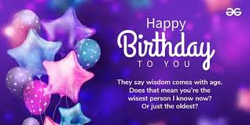
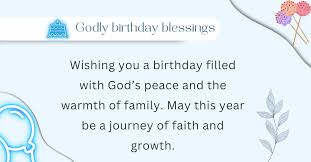
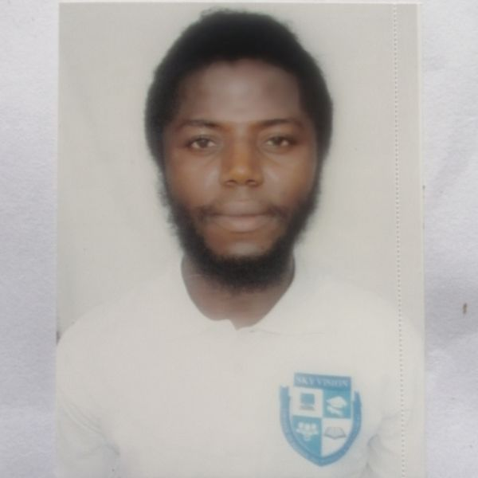

Welcome to Joe's 30TH Birthday!
Dear Joe,
It's an absolute pleasure to extend my wishes for you on this special day. I hope you have a fantastic time, love, and happiness. I'm excited to see what you've been up to and to share my love and support with you.
As we celebrate, I wanted to remind you of some of the memorable moments from your childhood and how they've shaped you. Here are a few of the highlights:
Memorable Moments from Your Childhood
- Your first kiss - I remember being so excited to see your first kiss and smiling so proudly. It was such a special moment and I can't wait to see how it will grow over time.
- Your first love letter - I remember receiving your first love letter and feeling so happy and excited. It was such a special occasion and I can't wait to hear about the future.
- Your first friendship - I remember being so excited to meet your first friend and being able to share my love for you. It was such a special experience and I can't wait to see how it will grow over time.
As I look back on these memories, I'm grateful for the incredible experiences and support you've given me throughout your life. I'm excited to see how you continue to grow and evolve as a person. I hope you have a fantastic birthday and I wish you the best in your future endeavors.
With love, Sis. Angela.

Your Favorites
- Your love for animals - I remember being so excited to see your favorite animals and being able to share my love for them. It was such a special experience and I can't wait to see how it will grow over time.
- Your love for music - I remember being so excited to hear your favorite music and being able to share my love for you. It was such a special experience and I can't wait to hear about the future.
- Your love for art - I remember being so excited to see your favorite art and being able to share my love for you. It was such a special experience and I can't wait to see how it will grow over time.
- Your love for travel - I remember being so excited to see your favorite travel experiences and being able to share my love for you. It was such a special experience and I can't wait to see how it will grow over time.
- Your love for food - I remember being so excited to see your favorite food and being able to share my love for you. It was such a special experience and I can't wait to see how it will grow over time.
- Your love for spending time with loved ones - I remember being so excited to see your favorite time with loved ones and being able to share my love for you. It was such a special experience and I can't wait to see how it will grow over time.
- Your love for cooking - I remember being so excited to see your favorite cooking and being able to share my love for you. It was such a special experience and I can't wait to see how it will grow over time.
- Your love for reading - I remember being so excited to see your favorite books and being able to share my love for you. It was such a special experience and I can't wait to see how it will grow over time.
- Your love for dancing - I remember being so excited to see your favorite dances and being able to share my love for you. It was such a special experience and I can't wait to see how it will grow over time.
- Your love for playing games - I remember being so excited to see your favorite games and being able to share my love for you. It was such a special experience and I can't wait to see how it will grow over time.
- Your love for photography - I remember being so excited to see your favorite photography and being able to share my love for you. It was such a special experience and I can't wait to see how it will grow over time.
Your Family
- Your love for your parents - I remember being so excited to see your parents and being able to share my love for them. It was such a special experience and I can't wait to see how it will grow over time.
- Your love for your siblings - I remember being so excited to see your siblings and being able to share my love for them. It was such a special experience and I can't wait to see how it will grow over time.
- Your love for your friends - I remember being so excited to see your friends and being able to share my love for them. It was such a special experience and I can't wait to see how it will grow over time.
- Your love for your family - I remember being so excited to see your family and being able to share my love for them. It was such a special experience and I can't wait to see how it will grow over time
- Your love for your pets - I remember being so excited to see your pets and being able to share my love for them. It was such a special experience and I can't wait to see how it will grow over time.
- Your love for your teachers - I remember being so excited to see your teachers and being able to share my love for them. It was such a special experience and I can't wait to see how it grow over time
Birthday gift to bring
- A special cake - I would love to see you create a special cake for Joe and bring it to his birthday party. It's such a wonderful gift to bring to a special person. 
- A beloved toy - I would love to see you create a beloved toy for Joe and bring it to his birthday party. It's such a wonderful gift to bring to a special person.
- A unique dress - I would love to see you create a unique dress for Joe and bring it to his birthday party. It's such a wonderful gift to bring to a special person.
- A beautiful gift - I would love to see you create a beautiful gift for Joe and bring it to his birthday party. It's such a wonderful gift to bring to a special person. 
- A special present - I would love to see you create a special present for Joe and bring it to his birthday party. It's such a wonderful gift to bring to a special person.
- A special photo - I would love to see you create a special photo for Joe and bring it to his birthday party. It's such a wonderful gift to bring to a special person.
- A special gift card - I would love to see you create a special gift card for Joe and bring it to his birthday party. It's such a wonderful gift to bring to a special person. 
- A special souvenir - I would love to see you create a special souvenir for Joe and bring it to his birthday party. It's such a wonderful gift to bring to a special person.
- A special gift - I would love to see you create a special gift for Joe and bring it to his birthday party. It's such a wonderful gift to bring to a special person.
Your Birthday Wishes
- Joe, I hope this birthday is as special as it is beautiful. I want to wish you a wonderful and happy birthday. I want to share my love for you and make sure you have a fantastic time. I want to make sure you have a special day filled with joy, laughter, and happiness. I want to make sure you have a special day filled with memories and the joys of life. I want to make sure you have a special day filled with the love and support of your family and friends. I want to make sure you have a special day filled with the love and support of your parents and teachers. I want to make sure you have a special day filled with the love and support of your pets. I want to make sure you have a special day filled with the love and support of your friends. I want to make sure you have a special day filled with the love and support of your teachers. 
After Birthday Party
- Joe, I hope this after birthday party is as special as it is beautiful. I want to wish you a wonderful and happy after birthday party. I want to share my love for you and make sure you have a fantastic time. I want to make sure you have a special day filled with joy, laughter, and happiness.
Joe's Birthday Party Song
Birthday Designer

Joseph Lahai Kanu